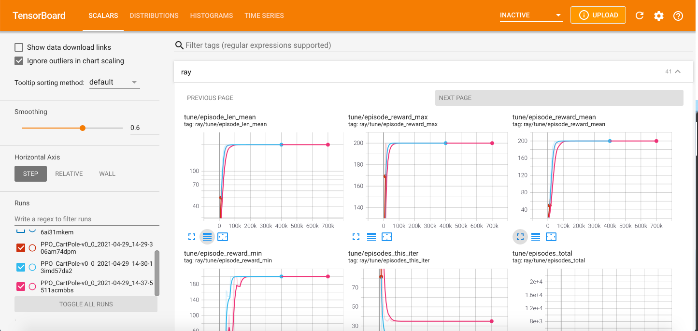
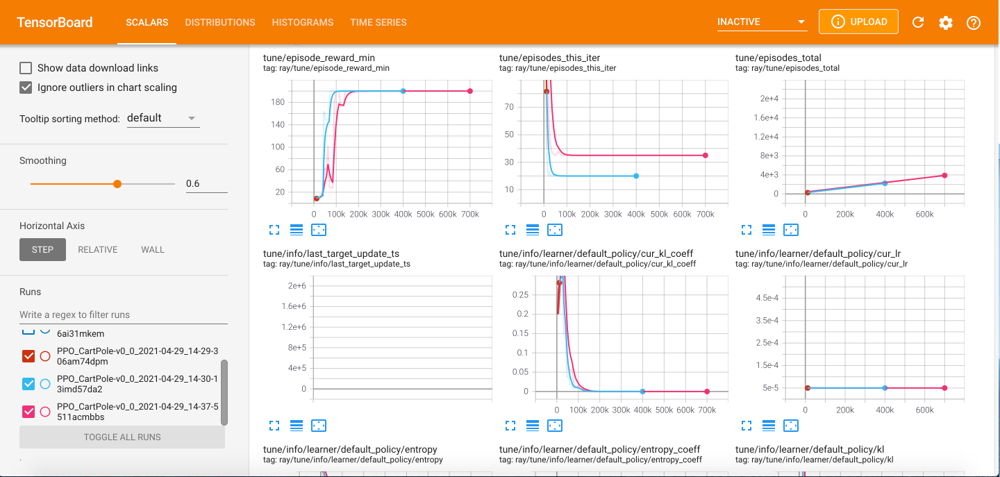

Reinforcement Learning on Eagle#
Welcome to the first NREL HPC tutorial for Reinforcement Learning (RL)!
This tutorial covers an extended, albeit simplified, introduction of OpenAI Gym and Ray/RLlib which you can use to effortlessly design, create, and run your own RL experiments on Eagle.
You can find the full material of this tutorial in the NREL/HPC GitHub repo.
The tutorial covers the following:
- Brief introduction to RL and Ray
- Agent training with Ray/RLlib:
- Experimenting with Ray Tune
- Single node/Single core.
- Single node/Multiple cores.
- Multiple nodes.
- Run experiments using GPUs for policy learning (helpful for large-scale observation and/or action spaces)
Run OpenAI Gym on a single node/single core#
Login on your Eagle account, create a new Anaconda environment as described in the tutorial repo, and test your installation by running a small example using one of the standard Gym environments (e.g. CartPole-v0).
Activate the Anaconda enironment and start a Python session
module purge
conda activate /scratch/$USER/conda-envs/myenv
python
import gym
env = gym.ens.make("CartPole-v0")
env.reset()
done = False
while not done:
action = env.action_space.sample()
obs, rew, done, _ = env.step(action)
print(action, obs, rew, done)
0 [-0.04506794 -0.22440939 -0.00831435 0.26149667] 1.0 False
1 [-0.04955613 -0.02916975 -0.00308441 -0.03379707] 1.0 False
0 [-0.05013952 -0.22424733 -0.00376036 0.2579111 ] 1.0 False
0 [-0.05462447 -0.4193154 0.00139787 0.54940559] 1.0 False
0 [-0.06301078 -0.61445696 0.01238598 0.84252861] 1.0 False
1 [-0.07529992 -0.41950623 0.02923655 0.55376634] 1.0 False
0 [-0.08369004 -0.61502627 0.04031188 0.85551538] 1.0 False
0 [-0.09599057 -0.8106737 0.05742218 1.16059658] 1.0 False
0 [-0.11220404 -1.00649474 0.08063412 1.47071687] 1.0 False
1 [-0.13233393 -0.81244634 0.11004845 1.20427076] 1.0 False
1 [-0.14858286 -0.61890536 0.13413387 0.94800442] 1.0 False
0 [-0.16096097 -0.8155534 0.15309396 1.27964413] 1.0 False
1 [-0.17727204 -0.62267747 0.17868684 1.03854806] 1.0 False
0 [-0.18972559 -0.81966549 0.1994578 1.38158021] 1.0 False
0 [-0.2061189 -1.0166379 0.22708941 1.72943365] 1.0 True
Agent training with Ray/RLlib#
RL algorithms are notorious for the amount of data they need to collect in order to learn policies. The more data collected, the better the training will (usually) be. The best way to do it is to run many Gym instances in parallel and collecting experience, and this is where RLlib assists.
RLlib is an open-source library for reinforcement learning that offers both high scalability and a unified API for a variety of applications. It supports all known deep learning frameworks such as Tensorflow, Pytorch, although most parts are framework-agnostic and can be used by either one.
The RL policy learning examples provided in this tutorial demonstrate the RLlib abilities. For convenience, the CartPole-v0 OpenAI Gym environment will be used.
The most straightforward way is to create a Python "trainer" script. It will call the necessary packages, setup flags, and run the experiments, all nicely put in a few lines of Python code.
Import packages#
Begin trainer by importing the ray package:
import ray
from ray import tune
Ray consists of an API readily available for building distributed applications. On top of it, there are several problem-solving libraries, one of which is RLlib.
Tune is also one of Ray's libraries for scalable hyperparameter tuning. All RLlib trainers (scripts for RL agent training) are compatible with Tune API, making experimenting easy and streamlined.
Import also the argparse package and setup some flags. Although that step is not mandatory, these flags will allow controlling of certain hyperparameters, such as:
- RL algorithm utilized (e.g. PPO, DQN)
- Number of CPUs/GPUs
- ...and others
import argparse
Create flags#
Begin by defining the following flags:
parser.add_argument("--num-cpus", type=int, default=0)
parser.add_argument("--num-gpus", type=int, default=0)
parser.add_argument("--name-env", type=str, default="CartPole-v0")
parser.add_argument("--run", type=str, default="DQN")
parser.add_argument("--local-mode", action="store_true")
--num-cpus: Defines the number of CPU cores used for experience collection (Default value 0 means allocation of a single CPU core).--num-gpus: Allocates a GPU node for policy learning (works only for Tensorflow-GPU). Except whole values (1,2,etc.), it also accepts partial values, in case 100% of the GPU is not necessary.--name-env: The name of the OpenAI Gym environment.--run: Specifies the RL algorithm for agent training.--local-mode: Helps defining whether experiments running on a single core or multiple cores.
Initialize Ray#
Ray is able to run either on a local mode (e.g. laptop, personal computer), or on a cluster.
For the first experiment, only a single core is needed, therefore, setup ray to run on a local mode. Then, set the number of CPU cores to be used.
Run experiments with Tune#
This is the final step in this basic trainer. Tune's tune.run function initiates the agent training process. There are three main arguments in this function:
- RL algorithm (string): It is defined in the
--runflag (PPO, DQN, etc.). stop(dictionary): Provides a criterion to stop training (in this example is the number of training iterations; stop training when iterations reach 10,000).config(dictionary): Basic information for training, contains the OpenAI Gym environment name, number of CPUs/GPUs, and others.
tune.run(
args.run,
name=args.name_env,
stop={"training_iteration": 10000},
config={
"env": args.name_env,
"num_workers": args.num_cpus,
"num_gpus": args.num_gpus,
"ignore_worker_failures": True
}
)
Except the aforementioned default hyperparameters, every RL algorithm provided by RLlib has its own hyperparameters and their default values that can be tuned in advance.
The code of the trainer in this example can be found in the tutorial repo.
Run experiments on Eagle#
Follow the steps in the tutorial repo carefully.
Run multi-core experiments#
The previous example is designed to run on a single CPU core. However, as explained above, RL training is highly benefited from running multiple concurrent OpenAI Gym rollouts. A single node on Eagle has 36 CPU cores, therefore use any number of those in order to speed up your agent training.
For all 36 cores, adjust the --num-cpus hyperparameter to reflect to all CPUs on the node:
python simple_trainer.py --num-cpus 35
--num-cpus equal to 35 means that all 36 cores are requested.
Such is not the case with the num_gpus key, where zero means no GPU allocation is permitted. This is because GPUs are used for policy training and not running the OpenAI Gym environment instances, thus they are not mandatory (although having a GPU node can assist the agent training by reducing training time).
Run experiments on multiple nodes#
Let's focus now on cases where the problem under consideration is highly complex and requires vast amounts of training data for training the policy network in a reasonable amount of time. It could be then, that you will require more than one nodes to run your experiments. In this case, it is better to use a slurm script file that will include all the necessary commands for agent train using multiple CPUs and multiple nodes.
Example: CartPole-v0#
As explained above, CartPole is a rather simple environment and solving it using multiple cores on a single node feels like an overkill, let alone multiple nodes! However, it is a good example for giving you an experience on running RL experiments using RLlib.
For multiple nodes it is more convenient to use a slurm script instead of an interactive node. Slurm files are submitted as sbatch <name_of_your_batch_script>, and the results are exported in an slurm-<job_id>.out file. The .out file can be interactively accessed during training using the tail -f slurm-<job_id>.out command. Otherwise, after training, open it using a standard text editor (e.g. nano).
Next, the basic parts of the slurm script file are given. The repo also provides the complete script.
The slurm file begins with defining some basic SBATCH options, including the desired training time, number of nodes, tasks per node, etc.
#!/bin/bash --login
#SBATCH --job-name=cartpole-multiple-nodes
#SBATCH --time=00:10:00
#SBATCH --nodes=3
#SBATCH --tasks-per-node=1
#SBATCH --cpus-per-task=36
#SBATCH --account=A<account>
env
The agent training will run for 20 minutes (SBATCH --time=00:20:00), and on three Eagle CPU nodes (SBATCH --nodes=3). Every node will execute a single task (SBATCH --tasks-per-node=1), which will be executed on all 36 cores (SBATCH --cpus-per-task=36). Then, define the project account. Other options are also available, such as whether to prioritize the experiment (--qos=high).
Use the commands to activate the Anaconda environment. Do not forget to unset LD_PRELOAD.
module purge
conda activate /scratch/$USER/conda-envs/env_example
unset LD_PRELOAD
ip_prefix=$(srun --nodes=1 --ntasks=1 -w $node1 hostname --ip-address)
port=6379
ip_head=$ip_prefix:$port
redis_password=$(uuidgen)
srun --nodes=1 --ntasks=1 -w $node1 ray start --block --head \
--node-ip-address="$ip_prefix" --port=$port --redis-password=$redis_password &
sleep 10
echo "starting workers"
for (( i=1; i<=$worker_num; i++ ))
do
node2=${nodes_array[$i]}
echo "i=${i}, node2=${node2}"
srun --nodes=1 --ntasks=1 -w $node2 ray start --block --address "$ip_head" --redis-password=$redis_password &
sleep 5
done
ray.init(_redis_password=args.redis_password, address=os.environ["ip_head"])
num_cpus = args.num_cpus - 1
--redis-password option must be active, along with the total number of CPUs:
python -u simple_trainer.py --redis-password $redis_password --num-cpus $total_cpus
sbatch <your_slurm_file>
cd to this directory in the slurm script before executing it.
### Example where the trainer is on scratch:
cd /scratch/$USER/path_to_specific_directory
python -u simple_trainer.py --redis-password $redis_password --num-cpus $total_cpus
Experimenting using GPUs#
It is now time to learn running experiments using GPU nodes on Eagle that can boost training times considerably. GPU nodes however is better to be utilized only in cases of environments with very large observation and/or action spaces. CartPole will be used again for establishing a template.
Allocate GPU node#
The following instructions are the same for both regular and Optimized TF versions of the Anaconda environments
Running experiments with combined CPU and GPU nodes is not so straightforward as running them using only CPU nodes (either single or multiple nodes). Particularly, heterogenous jobs using slurm have to be submitted.
Begin at first by specifying some basic options, similarly to previous section:
#!/bin/bash --login
#SBATCH --account=A<account>
#SBATCH --job-name=cartpole-gpus
#SBATCH --time=00:10:00
--gres=gpu:1), or both of them (--gres=gpu:2). For the purposes of this tutorial, one GPU core on a single node is utilized.
In total, slurm nodes can be categorized as:
- A head node, and multiple rollout nodes (as before)
- A policy training node (GPU)
Include the hetjob header for both the rollout nodes and the policy training node. Three CPU nodes are requested to be used for rollouts and a single GPU node is requested for policy learning:
# Ray head node
#SBATCH --nodes=1
#SBATCH --tasks-per-node=1
# Rollout nodes - Nodes with multiple runs of OpenAI Gym
#SBATCH hetjob
#SBATCH --nodes=3
#SBATCH --tasks-per-node=1
#SBATCH --cpus-per-task=36
# Policy training node - This is the GPU node
#SBATCH hetjob
#SBATCH --nodes=1
#SBATCH --tasks-per-node=1
#SBATCH --partition=debug
#SBATCH --gres=gpu:1
As an example, a single node and perhaps just a single CPU core may be requested. Now, it is more reasonable to request GPUs for an OpenAI Gym environment that utilizes high-dimensional observation and/or action spaces. Hence, the first priority would be to start with multiple CPU nodes, and request GPUs only if they are needed.
For the three types of nodes (head, rollouts, training), define three separate groups:
head_node=$(scontrol show hostnames $SLURM_JOB_NODELIST_HET_GROUP_0)
rollout_nodes=$(scontrol show hostnames $SLURM_JOB_NODELIST_HET_GROUP_1)
rollout_nodes_array=( $rollout_nodes )
learner_node=$(scontrol show hostnames $SLURM_JOB_NODELIST_HET_GROUP_2)
echo "head node : "$head_node
echo "rollout nodes: "$rollout_nodes
echo "learner node : "$learner_node
srun command so that they will run independently of each other.
echo "starting head node at $head_node"
srun --pack-group=0 --nodes=1 --ntasks=1 -w $head_node ray start --block --head \
--node-ip-address="$ip_prefix" --port=$port --redis-password=$redis_password & # Starting the head
sleep 10
echo "starting rollout workers"
for (( i=0; i<$rollout_node_num; i++ ))
do
rollout_node=${rollout_nodes_array[$i]}
echo "i=${i}, rollout_node=${rollout_node}"
srun --pack-group=1 --nodes=1 --ntasks=1 -w $rollout_node \
ray start --block --address "$ip_head" --redis-password=$redis_password & # Starting the workers
sleep 5
done
echo "starting learning on GPU"
srun --pack-group=2 --nodes=1 --gres=gpu:1 -w $learner_node ray start --block --address "$ip_head" --redis-password=$redis_password &
Finally, call
python -u simple_trainer.py --redis-password $redis_password --num-cpus $rollout_num_cpus --num-gpus 1
---num-gpus argument to include the requested GPU node (or nodes in case of --gres=gpu:2) for policy training. There is no need to manually declare the GPU for policy training in the simple_trainer.py, RLlib will automatically recognize the available GPU and use it accordingly.
The repo contains the complete slurm file versions for both env_example_gpu and env_gpu_optimized_tf, and they can be used as templates for future projects.
Create Gym environments from scratch#
So far, only benchmark Gym environments were used in order to demonstrate the processes for running experiments. It is time now to see how one can create their own Gym environment, carefully tailor-made to one's needs. OpenAI Gym functionality allows the creation of custom-made environments using the same structure as the benchmark ones.
Custom-made environments can become extremely complex due to the mechanics involved and may require many subscripts that perform parts of the simulation. Nevertheless, the basis of all environments is simply a Python class that inherits the gym.Env class, where the user can implement the three main Gym functions and define any hyperpameters necessary:
def __init__(self): Initializes the environment. It defines initial values for variables/hyperparameters and may contain other necessary information. It also defines the dimensionality of the problem. Dimensionality is expressed at the sizes of the observation and action spaces, which are given using the parametersself.observation_spaceandself.action_space, respectively. Depending on their nature, they can take discrete, continuous, or a combination of values. OpenAI provides detailed examples of each one of these types of spaces.def reset(self): When called, it resets the environment on a previous state (hence the name). This state can either be a user-defined initial state or it may be a random initial position. The latter can be found on environments that describe locomotion likeCartPole, where the initial state can be any possible position of the pole on the cart.def step(self, action): The heart of the class. It defines the inner mechanics of the environment, hence it can be seen as some kind of simulator. Its main input is the sampled action, which when acted upon moves the environment into a new state and calculates the new reward. The new state and reward are two of the function's output and they are necessary for policy training since they are also inputs to the policy network. Other outputs include a boolean variabledonethat is True when the environment reaches its final state (if it exists), and False otherwise*, as well as a dictionary (info) with user-defined key-value objects that contain further information from the inner workings of the environment.
* Many environments do not consider a final state, since it might not make sense (e.g. a traffic simulator for fleets of autonomous ridesharing vehicles that reposition themselves based on a certain criterion. In this case the reward will get better every time, but there is no notion of a final vehicle position).
Directions of how to create and register a custom-made OpenAI Gym environment are given below.
Create an environment class#
As stated above, the basis of any Gym environment is a Python class that inherits the gym.Env class. After importing the gym package, define the class as:
import gym
class BasicEnv(gym.Env):(...)
Define the dimensions of observation and action spaces in the def __init__(self) function:
def __init__(self):
self.action_space = gym.spaces.Discrete(5) # --> Actions take values in the 0-4 interval
self.observation_space = gym.spaces.Discrete(2) # --> Two possible states [0,1]
Discrete function. Other possible functions are Box for continuous single- or multi-dimensional observations and states, MultiDiscrete for vectors of discrete values, etc. OpenAi provides detailed explanation for all different space forms.
Next, define the def reset(self) function:
def reset(self):
state = 0
return state
Finally, define the def step(self, action) function, which takes as input the sampled action. Here the step function takes the environment at state 1 and based on the action, returns a reward of 1 or -1:
def step(self, action):
state = 1
if action == 2:
reward = 1
else:
reward = -1
done = True
info = {}
return state, reward, done, info
def render(self) function, and is called in random intervals throughout training returning a "snapshot" of the environment at that time. While this is helpful for evaluating the agent training process, it is not necessary for the actual training process. OpenAI documentation provides details for every one of these functions.
You can find the full script of this environment in the repo.
Run experiments on RLlib#
Let's now train the agent with RLlib. The full trainer script is given at the repo.
The trainer is almost identical to the one used before, with few additions that are necessary to register the new environment.
At first, along with ray and tune, import:
from ray.tune.registry import register_env
from custom_env import BasicEnv
register_env function is used to register the new environment, which is imported from the custom_env.py.
Function register_env takes two arguments:
- Training name of the environment, chosen by the developer.
- Actual name of the environment (
BasicEnv) in alambda config:function.
env_name = "custom-env"
register_env(env_name, lambda config: BasicEnv())
register_env works.
The tune.run function, instead of args.name_env, it uses the env_name defined above.
That's all! Proceed with agent training using any of the slurm scripts provided by the repo.
As a final note, creating custom-made OpenAI Gym environment is more like an art than science. The main issue is to really clarify what the environment represents and how it works, and then define this functionality in Python.
Validating results using Tensorboard#
Another way of visualizing the performance of agent training is with Tensorboard.
Navigate to the ray_results directory:
cd ~/ray_results/
E.g., after running all the examples previously shown in this tutorial, ray_results will have a subdirectory named CartPole-v0. Within, every experiment using CartPole generates a new subdirectory.
For the purpose of this tutorial, cd to the CartPole-v0 subdirectory and activate one of the environments:
module purge
conda activate <your_environment>
 
The tune/episode_reward_mean plot is essentialy the same as the figure plotted from data in the progress.csv file. The difference in the x-axis scale has a simple explanation. The episode_reward_mean column on the progress.csv file shows the reward progress on every training iteration, while the tune/episode_reward_mean plot on Tensorboard shows reward progress on every training episode (a single RLlib training iteration consists of thousands of episodes).